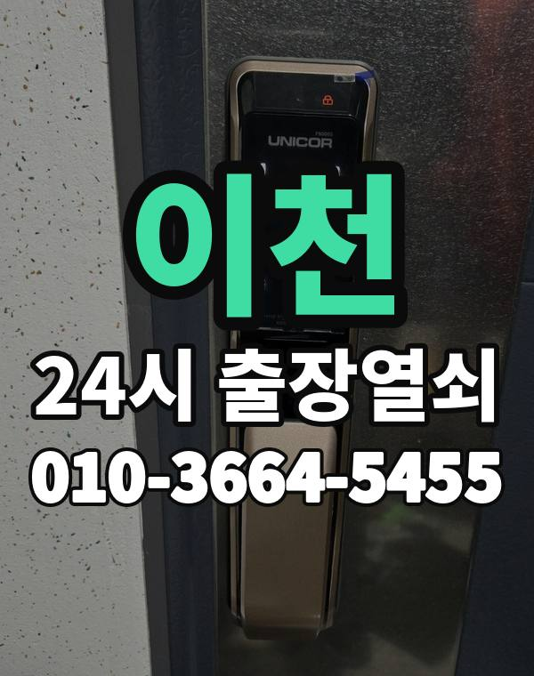

이천 출장 다니며 보는 동네
이천은 중리, 증포동 아파트와 부발, 장호원 주택가, 마장면 쪽 물류 창고까지 넓은 지역입니다.
시내와 읍면 거리가 있어 위치에 따라 도착 시간이 달라집니다.

이천시 출장 가는 동네
- 중리동
- 증포동
- 관고동
- 송정동
- 부발읍
- 장호원읍
- 마장면
- 신둔면
- 백사면
중리동 출장열쇠, 증포동 열쇠집처럼 동네 이름으로 찾으셨어도 같은 곳입니다.
적혀 있지 않은 동네도 이천시 안이면 다 갑니다.
이천에서 하는 일
이천에서 전화 주실 때
창고와 공장 사무실 출입문도 출동합니다.
위치를 받으면 예상 도착 시간을 먼저 말씀드립니다.
이천역, 부발역, 신둔도예촌역 근처라고 말씀해 주셔도 위치 잡기가 쉬워집니다.
가까운 역이나 큰 건물, 단지 이름을 같이 알려주세요.
- 정확한 주소, 아파트라면 동과 호수
- 번호판 상태 (꺼짐, 켜짐, 경고음)
- 거주 확인용 신분증이나 주소 나온 우편물
전화부터 작업까지 순서는 이용안내에 적어 두었습니다.
이천 출장열쇠 관련 글
- 이천 백사면 전원주택 대문과 철문이 안 열릴 때, 잠금 방식별로 먼저 볼 곳
- 이천 백사면 명절 여행 다녀온 뒤 현관문이 안 열릴 때 출장열쇠 대처법
- 이천 부발읍 주택 도어락 번호, 가족과 친척이 함께 쓸 때 바꾸고 나누는 요령
- 이천 부발읍 원룸·기숙사 출입문이 안 열릴 때 세입자가 먼저 할 일과 출장열쇠
- 이천 관고동 데드볼트가 안 들어가거나 안 빠질 때 원인 살펴보기
- 이천 관고동 열쇠와 지갑을 한꺼번에 잃어버렸을 때 집 문 열기와 자물쇠 교체 안내
- 이천 장호원읍 대문 철문 열쇠가 안 돌아갈 때 단독주택 출장열쇠 부르기 전 확인
- 이천 장호원읍 오래된 집 현관문이 처지고 경첩이 헐거워 안 열릴 때 짚어볼 부분
- 이천 증포동 아이가 집 안에서 문을 잠갔거나 혼자 갇혔을 때 출장열쇠 대처법
- 이천 증포동 자취방·쉐어하우스 출입문 막혔을 때 알아둘 것
- 이천 중리동 아파트 현관 도어락 비밀번호를 잊었거나 번호가 안 먹힐 때 출장열쇠
- 이천 중리동 출장열쇠 부르기 전 사진·위치·문 상태 준비하면 도착 후가 빨라지는 이유
- 이천 중리동 가족이 바꾼 도어락 비밀번호 몰라 못 들어갈 때
- 이천 마장면처럼 시내와 먼 곳에서 출장 열쇠집 고를 때 따져볼 기준
- 이천 마장면 창고 사무실 출입문 도어락 잠김 고장 출장열쇠로 여는 순서
- 이천 신둔면 주택 베란다 미닫이와 방문 잠금장치가 걸렸을 때 하나씩 푸는 방법
- 이천 신둔면 부모님 댁 도어락 점검 어르신이 쓰기 편한 설정과 출장열쇠 부르는 때
- 이천 송정동 이사 오자마자 도어락 번호 바꾸기와 자물쇠 점검 출장열쇠 안내
- 이천 송정동 여름 습기에 현관문이 뻑뻑해질 때 손보는 법
이천 출장열쇠 자주 묻는 질문
이천시 끝쪽 동네도 오시나요?
중리동, 증포동, 관고동, 송정동, 부발읍, 장호원읍 등 이천시 전 지역 갑니다. 목록에 없는 동네도 전화로 위치만 알려주시면 됩니다.
이천에서 밤늦게나 새벽에도 오시나요?
시간 상관없이 출동합니다. 주소를 받으면 도착 시간부터 알려드립니다.
문을 못 열면 비용을 내나요?
못 열면 받지 않습니다. 얼마인지는 손대기 전에 먼저 말씀드립니다.
세입자도 문을 열어 주시나요?
거주하시는 분인지 확인한 뒤 엽니다. 신분증이 집 안에 있으면 관리사무소 확인도 됩니다.
이천 도어락 새로 다는 것도 되나요?
네, 합니다. 문에 맞는 제품인지 보고, 고칠 수 있으면 수리를 먼저 권합니다.